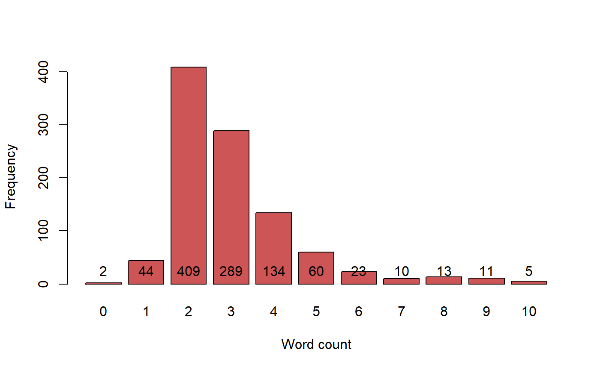

KWCounts generates keyword counts from PGR passport database
fields(columns).
KWCounts(x, fields, excep)
| x | A data frame. |
|---|---|
| fields | A character vector with the names of fields(columns) of the data frame from which KWIC index is to be generated. The first field is considered as the primary key or identifier (see Details). |
| excep | A vector of the keywords not to be considered for the counts (see Details). |
A data frame with the keyword counts for each record.
This function computes the keyword counts from PGR passport database
fields(columns) specified in the fields argument. The first field is
considered as the primary key or identifier and is not used for counting the
keywords. Any strings given in the excep argument are ignored for
generating the counts.
The keyword counts can give a rough indication of the completeness of the data in the database fields being used for identification of probable duplicates.
For large number of exceptions and/or large data.frame computation of keyword counts may take some time.
# Load PGR passport database GN <- GN1000 # Specify database fields to use as a vector GNfields <- c("NationalID", "CollNo", "DonorID", "OtherID1", "OtherID2") # Specify the exceptions as a vector exep <- c("A", "B", "BIG", "BOLD", "BUNCH", "C", "COMPANY", "CULTURE", "DARK", "E", "EARLY", "EC", "ERECT", "EXOTIC", "FLESH", "GROUNDNUT", "GUTHUKAI", "IMPROVED", "K", "KUTHUKADAL", "KUTHUKAI", "LARGE", "LIGHT", "LOCAL", "OF", "OVERO", "P", "PEANUT", "PURPLE", "R", "RED", "RUNNER", "S1", "SAM", "SMALL", "SPANISH", "TAN", "TYPE", "U", "VALENCIA", "VIRGINIA", "WHITE") # Compute the keyword counts GNKWCouts <- KWCounts(GN, GNfields, exep) # Plot the keyword counts bp <- barplot(table(GNKWCouts$COUNT), xlab = "Word count", ylab = "Frequency", col = "#CD5555")text(bp, 0, table(GNKWCouts$COUNT),cex=1,pos=3)